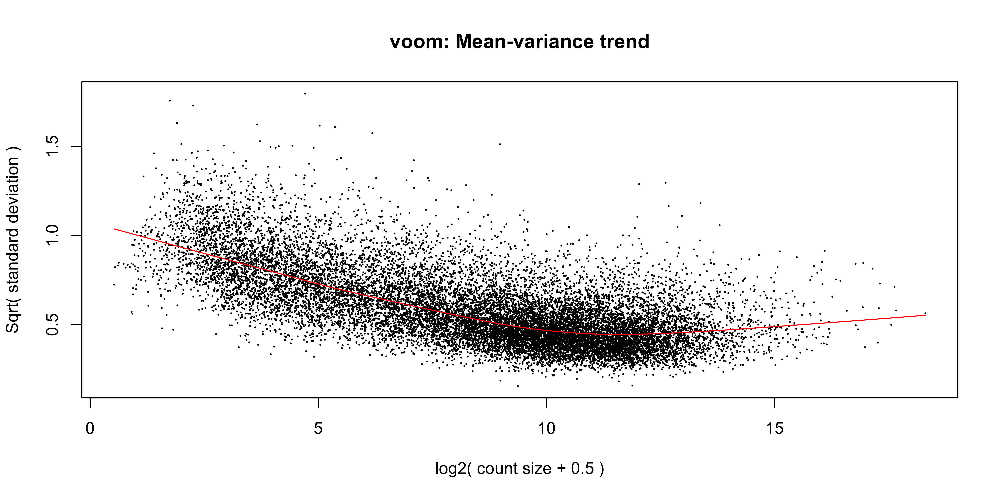
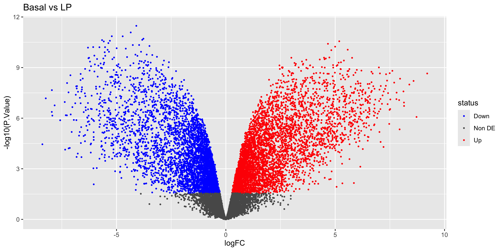
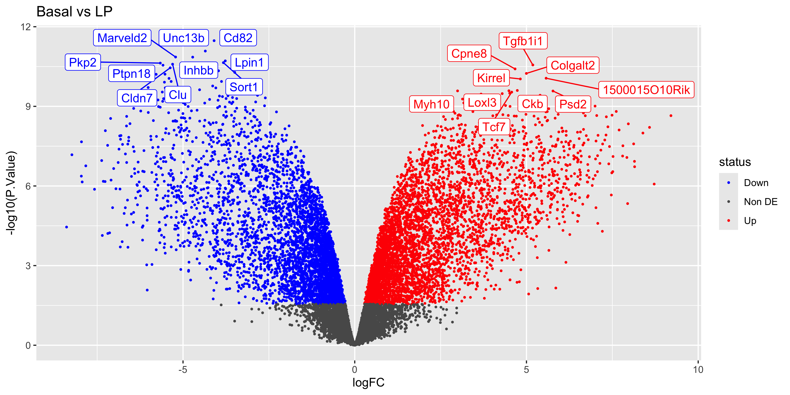
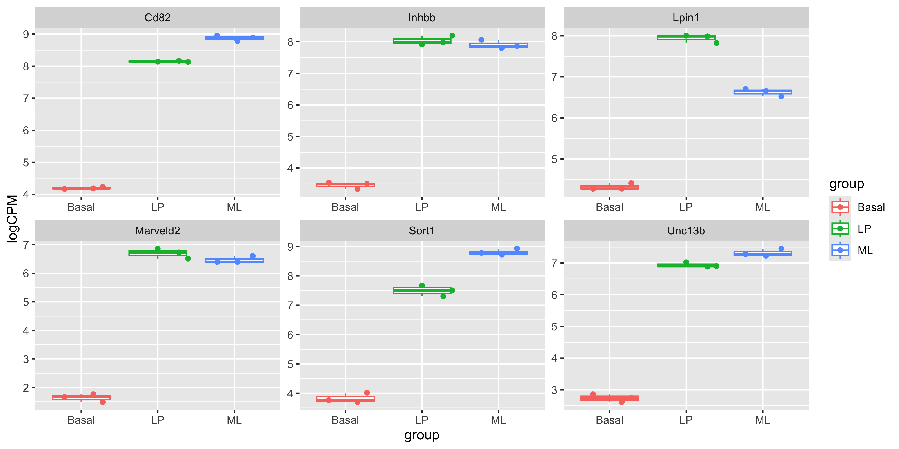
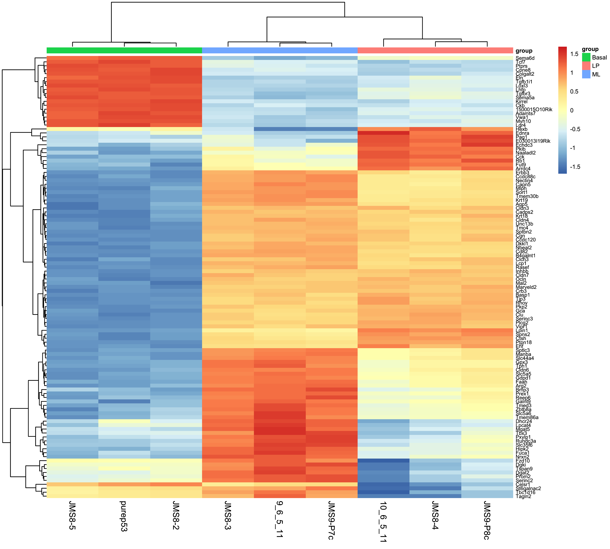
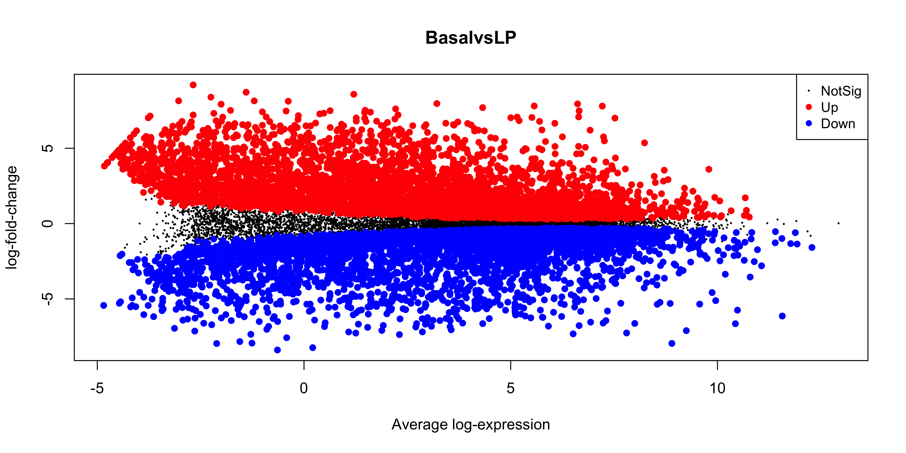
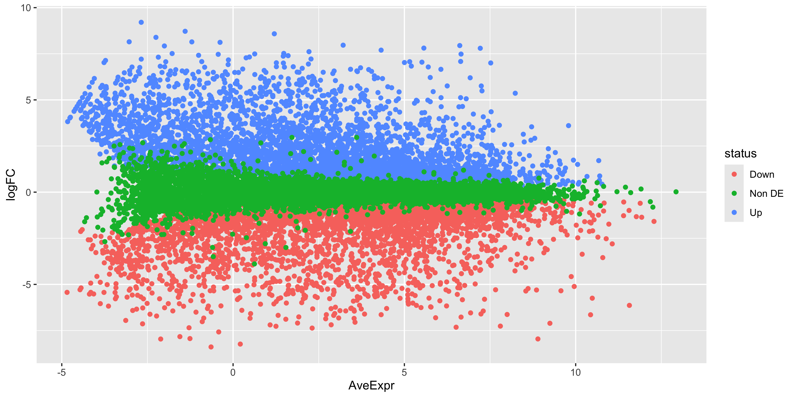
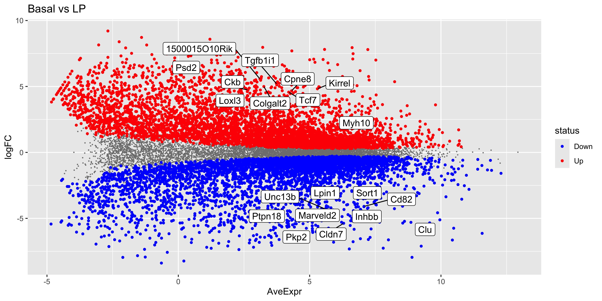

# load required packages
library(tidyverse)
library(edgeR)
# read raw data
counts_tbl <- read_tsv('data/rnaseq_counts.tsv')
gene_anno <- read_tsv('data/Ses3_geneAnnot.tsv')
# create DGEList object
dge <- DGEList(counts = counts_tbl %>% select(-1),
genes = gene_anno)
groups <- c("LP", "ML", "Basal", "Basal", "ML", "LP", "Basal", "ML", "LP")
groups <- parse_factor(groups, levels = c("Basal", "LP", "ML"))
dge$samples$group <- groups
rownames(dge$counts) <- counts_tbl %>% pull(ENTREZID)
rownames(dge$genes) <- gene_anno %>% pull(ENTREZID)
# filter lowly expressed genes
keep <- filterByExpr(dge)
dge_filt <- dge[keep, , keep.lib.sizes = FALSE]
# normalise the data for library size and RNA composition
dge_norm <- calcNormFactors(dge_filt, method = "TMM")
# extract tidy tables
counts_raw_tbl <- dge$counts %>% as_tibble(rownames='gene')
counts_filt_tbl <- dge_filt$counts %>% as_tibble(rownames='gene')
samples_tbl <- dge_norm$samples %>% as_tibble(rownames = 'id')
logcpm_tbl <- cpm(dge_norm$counts, log=T) %>% as_tibble(rownames='gene')7 RNA-seq - Part 2
The aim of this chapter is to complete the analysis of the RNA-seq data using the limma and edgeR packages. With the results of the analysis, we want to be able to produce publication quality figures and write out the results to a file for sharing or publication.
Learning Objectives
- fit a linear model to the data
- construct design and contrast matrices for the linear model
- model the mean-variance relationship of the data using the
voom()function - perform statistical testing to identify differentially expressed genes
- visualise the results using a range of common plots
- write out the results to a file
First we run the essential code to regenerate the DGEList objects from Chapter 6.
7.1 Linear modelling
To identify differentially expressed genes from our normalised gene expression data, we will use the limma package to fit linear models to the genes. A linear model is a broad class of statistical models that fit the value of an response (or dependent) variable as a linear function of one or more explanatory (or independent) variables (also called covariates).
The general form of a linear model looks like this:
\(Y = \beta_{0} + \beta_{1}X_{1} + \beta_{2}X_{2}... + \epsilon\)
This equation is saying that a response variable of interest \(Y\) is equal to a constant (\(\beta_{0}\)) plus the sum of the covariates (\(X_{i}\)) each multiplied by a constant coefficient (\(\beta_{i}\)) and some error term (\(\epsilon\)). The error term is the difference between the observed value and the predicted value of the model and is assumed to have a normal distribution with mean 0 and some variance.
Our experiment is quite simple, since there is only a single covariate, the cell type. The true benefit of using linear models is in its ability to accommodate more complex designs including multiple covariates.
To fit the linear models in the limma-voom framework we need two objects in addition to our data:
- A design matrix, representing the covariates.
- A contrast matrix, representing the specific comparison we wish to make.
7.1.1 Design matrix
The first step to fitting a linear model is to specify a design matrix. The design matrix specifies the values of the covariates for each sample, and is represented as a matrix due to the mathematical convenience.
To generate a design matrix. We use the function model.matrix(), with the expression ~ 0 + group. This returns a matrix representing the design where there is no intercept term and group is the only covariate. This is known as a ‘means model.’ If we omit the 0 then there would be an intercept in the model, and if we included more covariates then more columns would be generated.
design <- model.matrix(~ 0 + group, data = dge_norm$samples)
design groupBasal groupLP groupML
10_6_5_11 0 1 0
9_6_5_11 0 0 1
purep53 1 0 0
JMS8-2 1 0 0
JMS8-3 0 0 1
JMS8-4 0 1 0
JMS8-5 1 0 0
JMS9-P7c 0 0 1
JMS9-P8c 0 1 0
attr(,"assign")
[1] 1 1 1
attr(,"contrasts")
attr(,"contrasts")$group
[1] "contr.treatment"There are 9 rows, one for each sample (enabled by the rownames set on the dge_norm$samples data frame).
The column names correspond to the experimental groups.
The values in the cells denote membership of the particular sample for a particular group, as our groups in this case are mutually exclusive, each row contains only a single 1 to denote membership in a single group.
For an excellent comprehensive explanation of design matrices in limma, see this Further reading article.
7.1.2 Contrasts
Contrast matrices are companions to design matrices. They are used to specify the comparison of interest. In our case, we have three experimental groups: Basal, LP and ML. So if we are to perform differential expression analysis, we are most likely interested in the differences between only two of the groups at a time. Contrast matrices let use specify which comparison we’d like to make, and are also represented as a matrix just like the design.
A contrast matrix can be made using the makeContrasts() function. Within this function, we specify the name of each specific contrast and the formula for that contrast. For example, the BasalvsLP contrasts compares the difference between the Basal and LP groups. Note that the name of the phenotype groups must be written exactly as they are in the column names of our design matrix (see above).
In addition to the individual contrasts, the function must know about the design of the model. This is passed through the levels argument, which either accepts a matrix with the column names corresponding to levels of your experimental groups, or the levels themselves as a character vector. Here we first simplify the column names of our design matrix to make it easier to read. Then we create the contrast matrix using the makeContrasts() function.
colnames(design) <- c("Basal", "LP", "ML")
contr_matrix <- makeContrasts(
BasalvsLP = "Basal - LP",
BasalvsML = "Basal - ML",
LPvsML = "LP - ML",
levels = design # alternatively 'levels = colnames(design)'
)
contr_matrix Contrasts
Levels BasalvsLP BasalvsML LPvsML
Basal 1 1 0
LP -1 0 1
ML 0 -1 -1There are two things to note about a design matrix. First, the sum of the numbers in each column is equal to 0. Second, the way that you set up the equation in the matrix will determine the interpretation of the log-fold-change calculated later, as well as the meaning of up-regulated and down-regulated genes. For example, the contrast Basal - LP will give a positive log-fold-change for genes that are up-regulated in the Basal group compared to the LP group. If we had set up the contrast as LP - Basal, then the opposite would be true, and we would get a negative log-fold-change for genes that are up-regulated in the Basal group compared to the LP group.
7.1.3 Variance modelling with voom
We are now ready to fit our linear models. Limma fits linear models to the data with the assumption that the underlying data is normally distributed. Count data is generally not normally distributed, but log transforming count data gives it a roughly normal distribution sufficient for linear models to work well. To do this, limma transforms the raw count data to log-cpm using library sizes and the normalisation factors we calculated previously.
In addition to the normalisation steps, the limma-voom pipeline uses the voom() function to generate weights for the individual genes based on a modelled mean-variance relationship. This modelling allows us to get more information out of small sample sizes as the weights prevent our model from being more heavily influenced by more variable data points. The weights will then allow the linear model to be less influenced by genes with high variability, which is important for small sample sizes. The voom function also generates a mean-variance plot, which is useful for visualising the data.
The voom() function takes as arguments, our DGEList object and our design matrix. It also optionally outputs a plot of the mean-variance relationship of our data, called the ‘voom plot’.
v <- voom(dge_norm, design, plot = TRUE)
The output of voom() (our variable v) is an EList object which contains the following elements:
genes- a data frame of gene annotation data.targets- data frame of sample data.E- numeric matrix of normalised log-cpm values.weights- numeric matrix of precision weights.design- the design matrix.
The ‘voom plot’ shows the mean-variance relationship of the data. The x-axis is the average log2 expression of each gene, and the y-axis is the square root of the standard deviation of each gene. The idea is that the variance of a gene can be estimated as a function of its average expression, and that this estimate is more accurate than the direct calculation of the variance.
7.1.4 Fitting the linear model
We are now ready to fit our linear model with lmFit(), which calculates coefficients we defined in our design matrix design. The resulting object, vfit is a MArrayLM object. It contains a information about our genes (the same data frame as genes from our EList object v above), the design matrix and a number of statistical outputs. Of most interest to us is the coefficients, stored in an element called coefficients. The first rows of this matrix is shown below. Each gene is row and is labelled using the EntrezID. Each column gives coefficients for each of our phenotype groups. These coefficients are weighted averages of the log-cpm of each gene in each group.
vfit <- lmFit(v)
head(vfit$coefficients) Basal LP ML
497097 3.024072 -4.489321 -3.947720
20671 0.268061 -2.488569 -2.022298
27395 4.327058 3.900507 4.365429
18777 5.207081 4.975887 5.654029
21399 5.210983 4.901714 4.876376
58175 -1.929604 3.580912 3.133582We can then use contrasts.fit() to calculate coefficients for each contrast (or ‘comparison’) we specified in our contr_matrix. The output is also an object of the class MArrayLM (also known as an MArrayLM object). When we inspect the coefficients element now, we can see that each column is a contrast that we specified in our contrast matrix.
vfit <- contrasts.fit(vfit, contrasts = contr_matrix)
head(vfit$coefficients) Contrasts
BasalvsLP BasalvsML LPvsML
497097 7.5133929 6.97179163 -0.54160130
20671 2.7566301 2.29035894 -0.46627120
27395 0.4265513 -0.03837069 -0.46492202
18777 0.2311937 -0.44694820 -0.67814192
21399 0.3092693 0.33460736 0.02533804
58175 -5.5105165 -5.06318667 0.44732981With these values we essentially want to know whether or not the difference in values is significantly different from 0. If the difference is not significantly different from 0, then we have failed to establish a difference in the expression of a particularly gene between two groups. If the difference is significantly greater than 0, then we have up-regulation in the first group of the contrast, and if the difference is significantly less than 0, then we have down-regulation in the first group of the contrast.
7.2 Statistical testing
To actually test if the values are significantly different from 0, we use the eBayes() function to compute moderated t-statistics, moderated F-statistics and log-odds of differential expression for each gene, given a fitted linear model. ‘Moderated’ refers to empirical Bayes moderation, which borrows information across genes to obtain more accurate measures of variability for each gene. This also increases our power to detect differentially expressed genes.
efit <- eBayes(vfit)We can now look at the number of differentially expressed genes using the decideTests() function. The output of this function is a matrix where each column is a contrast (comparison of interest) and each row is a gene. The numbers 1, -1 and 0 mean up-regulated, down-regulated or not significantly differentially expressed, respectively.
Note that decideTests() also accounts for multiple testing. The default method is Benjamini and Hochberg1 but several others are also available.
dt <- decideTests(efit)
dtTestResults matrix
Contrasts
BasalvsLP BasalvsML LPvsML
497097 1 1 0
20671 1 1 0
27395 0 0 0
18777 0 -1 -1
21399 0 1 0
16619 more rows ...To obtain the total number of differentially expressed genes for each comparison, we can add the function summary():
summary(dt) BasalvsLP BasalvsML LPvsML
Down 4502 4850 2704
NotSig 7302 6993 11811
Up 4820 4781 2109The function topTable() can be used to obtain more information on the differentially expressed genes for each contrast. topTable() takes as arguments the MArrayLM object output by eBayes() (efit), the contrast name of interest, and the number of top differentially expressed genes to output. Note that the contrast name must be given in quotes and must be exactly as written in the contrast matrix contr_matrix.
It outputs a data frame with the following information:
- Gene details - gene information, from the
geneelement of theMArrayLMobject (efit). logFC- the log2 fold change of the contrast.AveExpr- the average log2 expression of that gene.t- moderated t-statistic.P.Value- p value.adj.P.Val- adjusted p value.B- log-odds that the gene is differentially expressed.
top_bvl <- topTable(efit, coef = "BasalvsLP", n = Inf) %>%
as_tibble() %>%
mutate(contr = 'BasalvsLP')
head(top_bvl)# A tibble: 6 × 10
ENTREZID SYMBOL TXCHROM logFC AveExpr t P.Value adj.P.Val B contr
<dbl> <chr> <chr> <dbl> <dbl> <dbl> <dbl> <dbl> <dbl> <chr>
1 12521 Cd82 chr2 -4.09 7.07 -35.4 3.35e-12 4.69e-8 18.4 Basa…
2 22249 Unc13b chr4 -4.35 5.66 -32.5 8.25e-12 4.69e-8 17.5 Basa…
3 16324 Inhbb chr1 -4.72 6.46 -30.9 1.40e-11 4.69e-8 17.1 Basa…
4 14245 Lpin1 chr12 -3.77 6.29 -29.9 1.94e-11 4.69e-8 16.9 Basa…
5 218518 Marveld2 chr13 -5.22 4.93 -30.9 1.39e-11 4.69e-8 16.8 Basa…
6 20661 Sort1 chr3 -3.82 6.70 -29.5 2.26e-11 4.69e-8 16.7 Basa…7.3 Plotting Results
In this section we will make plots of both the summary statistics (topTable output), and the gene expression levels per sample, using log(counts per million) together with sample metadata from dge$samples.
7.3.1 Data extract
To start with we extract all the data required to make any of the the common RNAseq results plots.
The experimental sample metadata and log(CPM) values were extracted to samples_tbl and logcpm_tbl respectively, in the previous chapter.
Here we will also extract the summary statistics for the remaining two pair-wise contrasts into separate tables.
7.3.1.1 Extract summary tables
Volcano plots and MA plots require differential expression summary statistics. We have the summary table for BasalvsLP already extracted to top_bvl, now for BasalvsML and LPvsML:
top_bvm <- topTable(efit, coef = "BasalvsML", n = Inf) %>%
as_tibble() %>%
mutate(contr = 'BasalvsML')
top_lvm <- topTable(efit, coef = "LPvsML", n = Inf) %>%
as_tibble() %>%
mutate(contr = 'LPvsML')7.3.2 Volcano Plot
Volcano plots are very popular for visually summarizing results from RNA-seq analysis. The volcano plot is a scatter plot of the negative log10 p-value (y) against the log2 fold-change (x). This plot is useful for visualising the significance of the differentially expressed genes, as the more significant results are at the top left and right of the plot.
To make a volcano plot for a single experimental contrast (BasalvsLP), we must first categorize the summary statistics for each gene with ‘Up’ ‘Down’ or ‘Not DE’, according to the adj.P.Val and logFC. The case_when() function is a good choice for binning continuous data (adj.P.Val) into categories.
top_bvl_cat <- top_bvl %>%
mutate(status = case_when(adj.P.Val < 0.05 & logFC > 0 ~ 'Up',
adj.P.Val < 0.05 & logFC < 0 ~ 'Down',
.default='Non DE'))Now to render the plot…
volcano_bvl <- top_bvl_cat %>%
ggplot(aes(x = logFC, y = -log10(P.Value), col = status)) +
geom_point(size=0.5) +
scale_colour_manual(values = c("blue", "#595959", "red")) +
ggtitle('Basal vs LP')
volcano_bvl
Lastly we can label the gene names for the top-most DEGs by extracting the top 20 genes using dplyr::slice() and feeding them into geom_label_repel() from the ggrepel library. Here instead of rewriting code, we just keep adding geoms to the volcano_plot ggplot object created above!
library(ggrepel)top_deg_bvl <- top_bvl_cat %>% group_by(status) %>% arrange(P.Value) %>%
slice_head(n = 10) %>%
filter(status!='Non DE')
volcano_bvl +
geom_label_repel(
data = top_deg_bvl,
aes(label = SYMBOL, col = status),
max.overlaps = 20,
show.legend = FALSE
) 
Next steps
Can you now make the labelled volcano plots for the BasalvsML and LPvsML contrasts?
7.3.3 Boxplots
It’s important to create boxplots for a few differentially-expressed genes. This is a way of confirming that the results in our summary statistics tables and the underlying data agree, and that that our contrasts are set up correctly!
In this case we’ll make boxplots from the log(CPM) values of individual samples, for the first 6 differentially-expressed genes in the BasalvsLP topTable top_bvl_cat. We will extract the first 6 rows of the tibble using slice_head(), then join the logCPM values per sample
top_bvl_cat %>% slice_head(n=6) %>%
left_join(logcpm_tbl, by= join_by(ENTREZID == gene))Error in `left_join()`:
! Can't join `x$ENTREZID` with `y$gene` due to incompatible types.
ℹ `x$ENTREZID` is a <double>.
ℹ `y$gene` is a <character>.Great! An error! …it seems that the ENTREZID and gene columns are not the same data type between the top_bvl_cat and the logcpm_tbl tibbles. We can fix this by creating a new column logcpm_tbl$ENTREZID containing the genes converted to numeric data:
logcpm_tbl <- logcpm_tbl %>%
mutate(ENTREZID = as.numeric(gene)) %>%
relocate(ENTREZID)Now we can rerun the left_join() and reshape the data to long form as required for ggplot2.
top_gene_long <- top_bvl_cat %>%
slice_head(n=6) %>%
left_join(logcpm_tbl, by='ENTREZID') %>%
select(SYMBOL, '10_6_5_11' : 'JMS9-P8c') %>%
pivot_longer(cols = -SYMBOL,
names_to = 'sample_id', values_to = 'logCPM')Next, we join the sample groupings to this reshaped data:
top_gene_long_samples <- left_join(top_gene_long, samples_tbl,
by=join_by(sample_id == id))…and plot the results
boxplots <- top_gene_long_samples %>%
ggplot(aes(x=group,y=logCPM, colour = group)) +
geom_boxplot() +
geom_jitter() +
facet_wrap(~SYMBOL, scales='free')
boxplots
Cross-check!
To confirm your statistical contrasts are working as expected, note the gene names that are down-regulated in the Basal vs LP conditions in these boxplots. Are they labelled as expected in the volcano plot?
7.3.4 Heatmap
Next, we can create a heatmap of the differentially expressed genes. The heatmap is a useful way to visualise the expression of the differentially expressed genes in individual samples, especially when more than two conditions are being tested. We can use the tidyheatmaps package to create the heatmap.
First we need to install the package if you haven’t already
install.packages("tidyheatmaps")The data we will use for the heatmap is going to be the log2 cpm expression values of the top differentially expressed genes, within the logcpm_tbl data, and the first 50 rows from each of the three top tables.
Note
Because genes may be differentially expressed in more than one contrast, the total number of unique genes may be less than 150.
For more interpretable labels, we will use the gene symbols as the row names of the expression matrix.
top_genes_all <- bind_rows(
top_bvl %>% slice_head(n = 50),
top_bvm %>% slice_head(n = 50),
top_lvm %>% slice_head(n = 50)) %>%
select(ENTREZID, SYMBOL) %>%
distinct() We now join the logCPM values for the top_genes:
top_genes_lcpm <- left_join(top_genes_all, logcpm_tbl,
by = "ENTREZID" )…and reshape the data to long format before joining in the sample group labels. This is very similar to how the data was prepared for our boxplots.
top_genes_lcpm_long <- top_genes_lcpm %>%
pivot_longer(cols = -c(ENTREZID,SYMBOL,gene),
names_to = "id",
values_to = "logcpm")
top_genes_lcpm_gp <- left_join(top_genes_lcpm_long, samples_tbl)Joining with `by = join_by(id)`Notice that if we do not specify the join key column, left_join() will try to detect it automatically. Use this shortcut only when you are confident and very familiar with the tibbles you are working with.
To create the heatmap we will use the tidyheatmaps() function with the logCPM values. We will add in arguments to scale the data colours along the rows with a z-score, adding in sample annotation, and using a dendrogram (tree-based clustering) to order the data by rows and columns. We will also add in the option to show the row names and column names, and set the font size.
You can experiment with removing each of these options to see how they affect the heatmap, as well as investigate additional options in the tidyheatmaps() documentation.
library(tidyheatmaps)
heatmap <- tidyheatmap(
df = top_genes_lcpm_gp,
rows = SYMBOL,
columns = id,
values = logcpm,
color_legend_n = 100,
annotation_col = group,
scale = 'row',
border_color = NA,
cluster_rows = TRUE,
cluster_cols = TRUE,
show_rownames = TRUE,
show_colnames = TRUE,
fontsize_row = 6,
fontsize_col = 10
)
heatmap
7.4 Saving the results
Now that we have produced a series of plots and the top genes table, we can save these files to a directory. These figures may form the basis for publication figures, and the results table can partially presented as a result, or the full table can be included as a supplementary file.
dir.create("output")
write_csv(top_bvl_cat, "output/top_genes_BasalvsLP.csv")
ggsave("output/volcano_plot_BasalvsLP.png", volcano_bvl)Saving 10 x 5 in imageggsave("output/heatmap.png", heatmap, width=9, height=9)
ggsave("output/boxplots.png", boxplots)Saving 10 x 5 in imageWith that we have come to the conclusion of the RNA-seq analysis and this course. You have now learned how to use various tidyverse packages to operate on data and create publication quality figures. You have also learned how to use the limma and edgeR packages to perform differential expression analysis on RNA-seq data. You should now be able to apply these skills to perform analysis on your own data.
7.5 Extension
7.5.1 MA Plot
The MA plot is a plot of log-fold-change (M-values) against log-expression averages (A-values), this is a common plot in RNA sequencing analysis to visualise the result of differential expression tests. It can be created using the plotMA() from the limma package. Creating this plot requires 3 pieces of information:
object = efit: The the fitted object containing the log-fold-change and log-expression averagescoef = 1: The column number of the contrast to plot since there are 3 different contrasts fitted within the object.status = dt[, 1]: A vector of numerics denoting whether a gene is up-regulated or down-regulated.
plotMA(efit, coef = 1, status = dt[, "BasalvsLP"])
#If you get an error with the above code, try:
limma::plotMA(efit, coef = 1, status = dt[, "BasalvsLP"])As before, we can try to re-create this plot using ggplot2 to give us more flexibility in plotting. The information we’ll need is in the top_bvl_cat tibble that we extracted for the volcano plot.
top_bvl_cat %>%
ggplot(aes(x = AveExpr, y = logFC, col = status)) +
geom_point()
While the coordinates of the points are the same, there is still quite a bit of work to do to make this plot look like the one produced by plotMA(). First we have the fix up the colours of the points. We also have to make it such that the non-significant points are plotted below the other points. To do this we would need to make it so that the non-significant points are plotted first. We can do this by reordering the levels of the status factor so that the non-significant points are plotted first. Labels can also be added using ggrepel for the top 10 DE genes in each direction.
top_bvl_cat_fct <- top_bvl_cat %>%
mutate(status = fct_relevel(status,'Non DE'))
scale_cols <- c(
"Not DE" = "#595959",
"Down" = "blue",
"Up" = "red"
)
ma_bvl <- top_bvl_cat_fct %>%
ggplot(aes(x = AveExpr, y = logFC, col = status)) +
geom_point(data = top_bvl_cat_fct %>% filter(status == "Non DE"), size = 0.1) +
geom_point(data = top_bvl_cat_fct %>% filter(status != "Non DE"), size = 1) +
geom_label_repel(
data = top_deg_bvl,
aes(label = SYMBOL, col = NULL),
max.overlaps = 20,
show.legend = FALSE
) +
scale_colour_manual(values = scale_cols) +
ggtitle('Basal vs LP')
ma_bvl
Next steps
Can you now make the labelled MA plots for the BasalvsML and LPvsML contrasts?
Now we can save the MA plot to our output:
ggsave("output/ma_plot_BasalvsLP.png", ma_bvl)Saving 10 x 5 in image7.5.2 Gene set testing
Although beyond the scope of this subject, researchers are often interested in discovering biological trends in differential gene expression results such as we have generated above. To do this, genes can be grouped according to their involvement in similar biological processes, molecular functions or cellular components, for example. A single gene can be involved in multiple biological processes, and have multiple ‘terms’ or ‘labels’. Genes with the same assigned term are called a ‘gene set’.
‘Gene set enrichment analysis’ is the science of identifying terms that are over-represented among differentially expressed genes. There are many methods for doing this, and ensemble methods (aggregating results from multiple enrichment testing methods), is an optimal approach, as detailed here.
7.6 References
1.
Benjamini Y, Hochberg Y. Controlling the False Discovery Rate: A Practical and Powerful Approach to Multiple Testing. Journal of the Royal Statistical Society Series B: Statistical Methodology [Internet]. 1995 Jan 1;57(1):289–300. Available from: http://dx.doi.org/10.1111/j.2517-6161.1995.tb02031.x